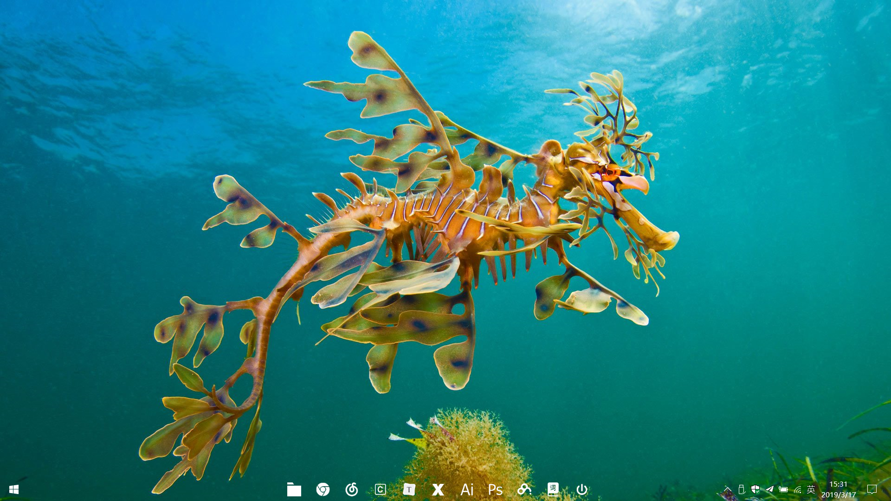

桌面效果图 软件推荐 PDF阅读器： 文电通PDF阅读器 视频播放器：PotPlayer 广告拦截：阿呆喵 解压缩软件：Bandizip 百度网盘全速下载：PanDownload UWP：DailyPic(Bing的每日壁纸，可选择性下载中意的壁纸作为桌面背景) 系统速度优化Ctrl + al ...
桌面效果图 软件推荐 PDF阅读器： 文电通PDF阅读器 视频播放器：PotPlayer 广告拦截：阿呆喵 解压缩软件：Bandizip 百度网盘全速下载：PanDownload UWP：DailyPic(Bing的每日壁纸，可选择性下载中意的壁纸作为桌面背景) 系统速度优化Ctrl + al ...
优势 可以更改硬盘格式与引导方式 可以备份原有系统的数据 自带修复软件，可以在不重装系统的情况下修复系统 准备 PE安装工具下载：微PE工具箱 操作系统镜像下载：MSDN 8G及以上空间的U盘/移动硬盘(主要用于存放系统镜像) 安装系统 安装PE到U盘/移动硬盘 将操作系统镜像放到U盘（或 ...
终端界面的说明示例：hunter@Hunter-PC:~$ 最左侧的hunter是目前用户的账号 @之后的Hunter-PC是主机名 ~是目前所在目录；~为当前用户的home目录 $是提示字符；root的提示符为#，普通用户为$ 登录后取得的程序被称为Shell(壳，因为该程序负责最外面跟使用者 ...
内容协商多视图SpringMVC配置多视图-内容协商原理 <bean class="org.springframework.web.servlet.view.ContentNegotiatingViewResolver"> <property name=& ...